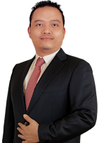
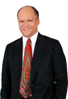

|
Anindya Novyan Bakrie |Komisaris Utama
Warga Negara Indonesia, lahir di Jakarta tahun 1974.
RIWAYAT JABATAN DAN PENGALAMAN KERJA
Menjabat sebagai Komisaris Utama PT Intermedia Capital Tbk. sejak tahun 2013 berdasarkan Akta No. 115 tanggal 11 Desember, 2013 yang dibuat di hadapan Humberg Lie, S.H., S.E., M.Kn., notaris di Jakarta ("Akta no.115/2013"). Saat ini beliau juga menjabat sebagai Presiden Direktur VIVA sejak tahun 2014, CEO PT Bakrie Global sejak 2012, Presiden Komisaris PT Lativi Mediakarya sejak tahun 2007, Presiden Komisaris PT Cakrawala Andalas Televisi sejak tahun 2009, Komisaris PT Bakrie Sumatera Plantations Tbk sejak 2012 dan Komisaris Utama PT Bakrie Telecom Tbk. sejak tahun 2013.
RIWAYAT PENDIDIKAN
Anindya Novyan Bakrie memperoleh gelar Bachelor of Science dari Northwestern University, Illinois, jurusan Industrial Engineering pada tahun 1996 dan MBA dari Stanford Graduate School of Business-California, Amerika Serikat, pada tahun 2001.
|
|  |
Robertus Bismarka Kurniawan | Komisaris
Warga Negara Indonesia, lahir di Jakarta tahun 1971.
RIWAYAT JABATAN DAN PENGALAMAN KERJA
Menjabat sebagai Komisaris Perseroan sejak tanggal 11 Desember 2013 berdasarkan Akta No.115/2015. Saat ini beliau juga menjabat sebagai Komisaris Utama PT. Digital Media Capital sejak 2015, Komisaris PT Bakrie Global Ventura sejak 2013, Wakil Presiden Direktur VIVA sejak 2011, Komisaris PT Cakrawala Andalas Televisi sejak tahun 2009, dan Komisaris PT Lativi Mediakarya sejak tahun 2007.
RIWAYAT PENDIDIKAN
Robertus Bismarka Kurniawan memperoleh gelar Bachelor of Science di bidang Teknik Sipil dari University of Southern California, Amerika Serikat pada tahun 1993, gelar Master of Science jurusan Structural Engineering dari Cornell University, USA pada tahun 1994 diikuti gelar MBA jurusan Finance and Investment Banking dari University of Winconsin-Madison, Amerika Serikat pada tahun 1995. |
|  |
Ilham A. Habibie | Komisaris Independen
Warga Negara Indonesia, lahir di Aachen tahun 1963.
RIWAYAT JABATAN DAN PENGALAMAN KERJA
Menjabat sebagai Komisaris Independen Perseroan sejak tahun 2013 berdasarkan Akta No. 115/2013. Beliau juga menjabat berbagai posisi saat ini sebagai Komisaris Utama PT Industri Mineral Indonesia sejak 2012, Komisaris PT Malacca Trust Wuwungan Insurance sejak 2011, Komisaris Utama PT Ilthabi Digital Edukasi sejak 2011, Komisaris Utama PT Ilthabi Energia sejak 2009, Komisaris Utama PT Ilthabi Sentra Herbal sejak 2005, Direktur NonEksekutif Mitra Energia Ltd. sejak 2004, Komisaris PT Citra Tubindo Tbk. sejak 2004, Direktur Utama PT Ilthabi Rekatama sejak 2002, dan Komisaris PT Metinca Prima Industrial Work sejak 2000.
Sebelumnya beliau pernah menjabat sebagai Asisten Kepala BPPT untuk Aeronautika dan Teknologi Lanjutan (1996-1998), Dosen Fakultas Teknik Industri Institut Teknologi Bandung (1997-1999), Direktur Komersial PT Dirgantara Indonesia (Persero) (2000-2001), Direktur Operasional dan Komersial PT Dirgantara Indonesia (Persero) (1999-2000), Wakil Presiden Direktur Eksekutif Unit Bisnis Pesawat-Manajer Program N2130 Regional Jet PT Dirgantara Indonesia (Persero) (1997-1999),
Wakil Presiden Direktur-Program Manager N2130 Regional Jet (1995-1997), dan Asisten Direktur Utama untuk Program N2130 Regional Jet (1994-1995).
RIWAYAT PENDIDIKAN
Ilham A. Habibie memperoleh gelar Diplomarbeit
(Strata 2) dari Technische Universitat Munchen pada tahun 1987, gelar Dipl.,-Ing dari Technische Universitat Munchen jurusan Teknik Aeronautika pada tahun 1987, dan gelar Dr,-Ing dari Technische Universitat Munchen jurusan Teknik Aeronautika. Berhasil menyelesaikan Program Eksekutif Internasional di INSEAD, Perancis, dan Singapura pada tahun 1999, dan memperoleh gelar Master of Business Administration dari University of Chicago, Amerika Serikat untuk jurusan Bisnis
pada tahun 2013. |
|